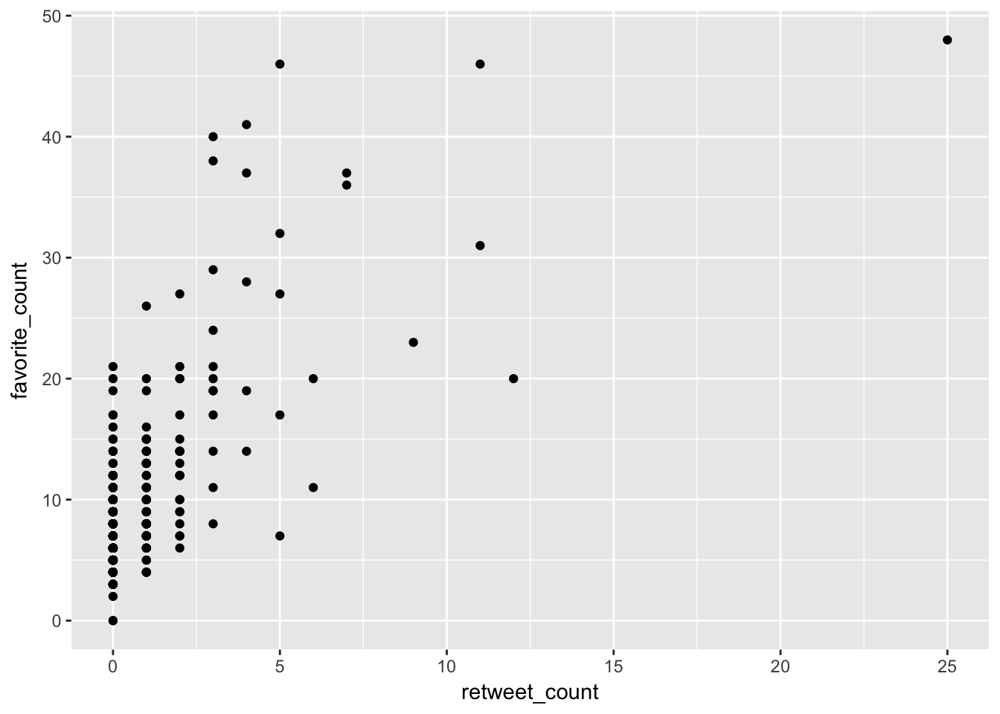

R-Ladies IWD2018 tweets analysis, using the rtweet package
April 17, 2018
R-Ladies is a global organization that promotes diversity in the R community. One way to do this is by raising the visibility of women and other underrepresented genders1 in tech, especially those who are R users, or developers.
1 (cis/trans women, trans men, non-binary, genderqueer, agender, or other).
The R-Ladies Global Team instigated a unique initiative to increase female visibility in tech, as part of the 2018 International Women’s Day celebration. They created a twitter account (@rladies_iwd2018) to post - tweet by tweet- each profile of R-Ladies listed in the R-Ladies Global Directory. For details on how they set up this initiative, check out this blog post.
Encouraged by the R-Ladies Global Team, but also out of simple curiosity, I decided to analyze these tweets and their interactions, using Mike Kearney’s super useful rtweet package.
Warnings
WARNING 1: The rtweet package interacts with Twitter’s API, which has a time limit of 7 days of doing it for free. If you would like to perform Twitter analyses after one week of tweets being created, you may have to pay for this service. The exception is when using get_timeline, but there is still a limit on the number of tweets you can fetch. It works for @rladies_iwd2018 because the account has relatively few tweets (n = 442 at the time of this analysis).
WARNING 2: The Twitter API changes frequently. Therefore, the variable names I used for this analysis might change in the future. There should be similar variables being included in the API at any time, though. So if you want to use this code, make sure that you have up-to-date Twitter API variable names, and change anything if needed.
The game
Apart from the initiative itself, the R-Ladies Global Team also created a game, where anybody could reply to each tweet with the Twitter handle of the featured R-Lady. The person with the largest amount of replies wins the game!

Resources
I used several resources for my analysis, including:
- How to create a Twitter App: I used this article to set up a twitter app that could interact with the Twitter API using the
rtweetpackage. - The
rtweetpackage: I used this webpage to understand the Twitter API, as perrtweet. - Mike Kearney’s slides about
rtweet: I used these slides as reference for thesearch_tweets()function. - Maëlle’s blog post: “Names of b…..s badder than Taylor Swift, a class in women’s studies?”: Another reference for
search_tweets(). - Maëlle’s blog post: “A glance at R-bloggers Twitter feed”: With this blog post, I learned how to explore the time at which tweets were posted, as well as some exploration about favorites and retweets.
- Lucy’s blog post: Twitter tress: The last bits of this blog post (about the replies tree) are based on this blog post.
Questions
I had several questions at the beginning of this analysis:
- When were most of the tweets posted?
- Is there any correlation between favorites and retweets?
- What’s the location of the majority of tweets?
- Who won the game?
- What does the largest chain of tweets and replies look like?
Load packages
library(rtweet)
library(gridExtra)
library(dplyr)
library(lubridate)
library(ggplot2)
library(ggraph)
library(igraph)
library(ggiraph)Get timeline and tweets
At the time of this analysis, the @rladies_iwd2018 twitter account has fewer than 500 tweets, so we can import all tweets by doing this:
rladies_tweets <- get_timeline("rladies_iwd2018", n = 500)When were most of the tweets posted?
International Women’s Day 2018 took place on March 8th, 2018. I’m assuming that most tweets came out on that day, but let’s check. Also, some of the replies were still being made a few days later.
rladies_tweets <- mutate(rladies_tweets,
wday = as.factor(wday(created_at,
label = TRUE)))
rladies_tweets <- mutate(rladies_tweets,
hour = as.factor(hour(created_at)))
rladies_tweets <- mutate(rladies_tweets,
week = week(created_at))
rladies_tweets <- mutate(rladies_tweets,
day = as.Date(created_at))
weekday_dat <- rladies_tweets %>%
group_by(week, wday) %>%
summarize(n = n(), created_at = created_at[1])
arrange(weekday_dat, created_at) %>%
head() %>%
knitr::kable()| week | wday | n | created_at |
|---|---|---|---|
| 10 | Tue | 4 | 2018-03-06 22:49:37 |
| 10 | Wed | 106 | 2018-03-07 23:58:56 |
| 10 | Thu | 232 | 2018-03-08 23:56:17 |
| 10 | Fri | 100 | 2018-03-09 11:37:53 |
Unsurprisingly, most tweets were posted on International Women’s Day!
In fact, all tweets were sent on International Women’s Day 2018, but because there are different time zones around the world, we get the impression that there were some tweets posted one day before and one day after. The table shows how I experienced tweets in my time zone (GMT +1), but all these timepoints correspond to International Women’s Day somewhere on Earth.
Is there any correlation between favorites and retweets?
I took a look at the proportion of favorites and the proportion of retweets, and they are quite dissimilar:
sum(rladies_tweets$favorite_count != 0) /
length(rladies_tweets$favorite_count)## [1] 0.9954751sum(rladies_tweets$retweet_count != 0) /
length(rladies_tweets$retweet_count)## [1] 0.2737557So 99.5% of the @rladies_iwd2018 tweets have been favorited, but only 27.4% have been retweeted 🤔.
Let’s take a look at the correlation coefficient, and how do the data look:
cor(rladies_tweets$favorite_count, rladies_tweets$retweet_count, method = "spearman")## [1] 0.5486673ggplot(rladies_tweets) +
geom_point(aes(retweet_count, favorite_count))
There’s a slight positive orientation of data points, but no specific pattern. The correlation coefficient is 0.55, which means that there is a positive correlation, but it is not so strong.
What it actually means is that people who follow the @rladies_iwd2018 account tend to favorite tweets way more often than they tend to retweet them. I assume it’s because it is easier to just press the ❤️ button, instead of hitting “retweet” and then having to retweet as it is (with no extra info - maybe confusing to their followers) or having to write some description about a tweet they just happen to like. Liking a tweet is just easier than spreading the info about it. I can’t generalize these results, though, so I don’t know if this really happens for all accounts.
What’s the location of the majority of tweets?
The function get_timeline that we used at the beginning only accesses tweets posted by the @rladies_iwd2018 account. In order to see all tweets related to the account, including mentions, replies, etc., we need to use search_tweets.
# find url of first tweet
tweet_url <- "https://twitter.com/rladies_iwd2018/status/971140001495908353"
id <- gsub(".*status/", "", tweet_url)
tweets <- search_tweets(
q = "@rladies_iwd2018 OR to:rladies_iwd2018 OR rladies_iwd2018",
sinceId = id, n = 2000, include_rts = FALSE)
tweets <- tweets %>%
distinct()
tweets <- arrange(tweets, desc(created_at))Now, we can explore geographic locations of all tweets and replies:
tweets %>%
subset(!is.na(country)) %>%
janitor::tabyl(country) %>%
arrange(desc(country))## country n percent
## 1 Uruguay 38 0.82608696
## 2 United States 4 0.08695652
## 3 India 2 0.04347826
## 4 Australia 2 0.04347826It looks like Uruguay🇺🇾 is ahead for a big margin! Does this mean that somebody in Uruguay🇺🇾 has won the game?
It looks like not everybody has their location services on, though. After all, only 5% of tweets mention their location.
Let’s try to find out who did in fact win the game!
Who won the game?
In order to know who won the game, let’s take a look at all replies, by user_id:
tweets %>%
janitor::tabyl(user_id) %>%
arrange(desc(n)) %>%
head(10)## user_id n percent
## 1 957247055898046464 442 0.44736842
## 2 633700365 166 0.16801619
## 3 114258616 38 0.03846154
## 4 3367336625 35 0.03542510
## 5 776402106 33 0.03340081
## 6 2865404679 25 0.02530364
## 7 16284661 22 0.02226721
## 8 159846289 15 0.01518219
## 9 19429174 12 0.01214575
## 10 23622967 11 0.01113360So, the first place with user_id = "957247055898046464" is clearly the @rladies_iwd2018 account because there are 442. Let’s check:
tweets %>%
janitor::tabyl(user_id) %>%
arrange(desc(n)) %>%
filter(n == 442) %>%
lookup_users()## # A tibble: 1 x 20
## user_id name screen_name location description url protected
## <chr> <chr> <chr> <chr> <chr> <chr> <lgl>
## 1 9572470~ IWD 20~ rladies_iw~ The who~ Promoting gender~ https~ FALSE
## # ... with 13 more variables: followers_count <int>, friends_count <int>,
## # listed_count <int>, statuses_count <int>, favourites_count <int>,
## # account_created_at <dttm>, verified <lgl>, profile_url <chr>,
## # profile_expanded_url <chr>, account_lang <chr>,
## # profile_banner_url <lgl>, profile_background_url <chr>,
## # profile_image_url <chr>Indeed, that is the @rladies_iwd2018 account.
The second place is interesting, because it has 166 replies, which is a huge difference in comparison to the third place! Let’s find out who is this person!
And the winner is 🥁🥁🥁:
tweets %>%
janitor::tabyl(user_id) %>%
arrange(desc(n)) %>%
filter(n == 166) %>%
lookup_users()## # A tibble: 1 x 20
## user_id name screen_name location description url protected
## <chr> <chr> <chr> <chr> <chr> <lgl> <lgl>
## 1 6337003~ Laura~ _lacion_ Buenos ~ Biostatistician/Da~ NA FALSE
## # ... with 13 more variables: followers_count <int>, friends_count <int>,
## # listed_count <int>, statuses_count <int>, favourites_count <int>,
## # account_created_at <dttm>, verified <lgl>, profile_url <chr>,
## # profile_expanded_url <chr>, account_lang <chr>,
## # profile_banner_url <chr>, profile_background_url <chr>,
## # profile_image_url <chr>The winner of the game is Laura Acion, with 166 replies!!!
Conclusions
With this analysis I’ve learned that:
- Tweets happened on 08.03.2018 - exactly as planned for iwd2018
- People tend to favorite tweets, but not necessarily to retweet (correlation ~50%)
- The majority of tweet replies come from Uruguay🇺🇾 (but there are a lot of missing locations)
- Laura Acion won the game!
P.S. How does the largest chain of tweets and replies look like?
I will try to recreate Lucy D’Agostino McGowan’s analysis for twitter trees, using the tweet that got the highest number of replies. This tweet is by Laura Acion:

# Grab the tweets
id <- "971560433835565057"
diff <- 1
while (diff != 0) {
id_next <- tweets %>%
filter(reply_to_status_id %in% id) %>%
pull(status_id)
id_new <- unique(c(id, id_next))
diff <- length(id_new) - length(id)
id <- id_new
}
all_replies <- tweets %>%
filter(reply_to_status_id %in% id)
# Pull the replyee and replier text
from_text <- all_replies %>%
select(reply_to_status_id) %>%
left_join(all_replies, c("reply_to_status_id" = "status_id")) %>%
select(screen_name, text)
to_text <- paste0(all_replies$screen_name, ": ", all_replies$text)
to_text <- gsub("'", "`", to_text)
from_text <- paste0(from_text$screen_name, ": ", from_text$text)
from_text <- gsub("'", "`", from_text)
# Set the text for tweet_0.
tweet_0 <- tweets$text[tweets$status_id == "971560433835565057"]
# Create the edges
edges <- tibble::tibble(
from = from_text,
to = to_text
) %>%
mutate(from = ifelse(
from == "NA: NA",
tweet_0,
from)
)
# Create the graph
graph <- graph_from_data_frame(edges, directed = TRUE)
V(graph)$tooltip <- V(graph)$name
set.seed(8318)
p <- ggraph(graph, layout = "nicely") +
geom_edge_link() +
geom_point_interactive(aes(x, y, color = "red", alpha = 0.05, tooltip = tooltip)) +
theme_void() +
theme(legend.position = "none")
ggiraph(code = print(p),
width_svg = 10,
zoom_max = 4)